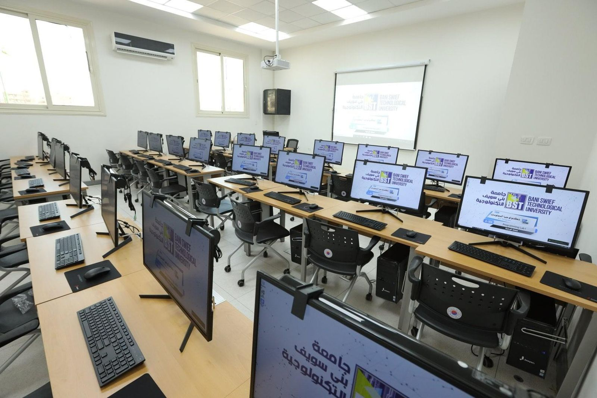

موجز البرنامج :
المعلومات
يعد تخصص تكنولوجيا المعلومات والاتصالات أحد أهم متطلبات السوق المحلية في العصر الحديث حيث تحتاج التحديات المتزايدة الجديدة في جميع أنحاء العالم إلى مهارات متقدمة لتغطية متطلبات الصناعة الحديثة القائمة على استخدام أجهزة الكمبيوتر والتقنيات الرقمية.
تشارك أنظمة الكمبيوتر وتطبيقاته وتقنياته في جميع جوانب الحياة. لذا فإن الحاجة إلى المهنيين المدربين على تطبيقات الكمبيوتر ضرورية لمواكبة الثورة المعلوماتية وتلبية متطلبات سوق العمل.
يتكون قسم تكنولوجيا المعلومات والاتصالات من مجموعات مختلفة من المناهج الدراسية لتغطية تطبيقات الكمبيوتر المختلفة ، كما يحتوي على مجموعات تطبيقات البرمجة والبحث التي تهدف إلى حل مشاكل السوق المحلية الحقيقية. يمكّن هذا القسم الطلاب من اكتساب المعرفة والمهارات اللازمة ليتمكنوا من تحليل أنظمة تكنولوجيا المعلومات والاتصالات وتطويرها وبرمجتها في أي منظمة وسلطات حكومية أو خاصة.
أهداف البرنامج التعليمية : ( PEOs )
- تعزيز القدرة على حل المشكلات بناءً على التفكير الإبداعي والمعرفة الهندسية الأساسية.
- تعزيز القدرة على تصميم وتحليل تكنولوجيا المعلومات والاتصالات.
- تعزيز المهارات المهنية الميدانية والقدرة على اكتساب التكنولوجيا الجديدة.
- تحسين العمل الجماعي والقدرة على الاتصال.
- تعزيز القدرة العالمية.
بعد الانتهاء من البرنامج يمكن للطالب أن يكون قادراً على:
- تعزيز القدرة على حل المشكلات والتفكير الإبداعي والمعرفة الهندسية الأساسية.
- استخدم التجارب والممارسات للحصول على المزيد من الخبرات في حل المشكلات.
- كيفية الاستفادة المثلى من البحث عن البيانات لتحسين حل المشكلات.
- تعرف على المزيد من الأدوات والتطبيقات المختلفة (مواقع الويب والمدونات ولوحات المنافسة).
- كيفية تصميم فكرة حل المشكلات بوضوح قبل تطبيقها.
- تحديد الآثار الاجتماعية لحل المشكلات.
- تحديد نقاط القوة والضعف في قدرة التصميم والتحليل في مجال تكنولوجيا المعلومات والاتصالات.
- تحديد التأثيرات الاجتماعية على تكنولوجيا المعلومات والاتصالات.
- كيف يمكن أن تؤثر عمليات البحث عن البيانات على تعزيز المهارات المهنية الميدانية والقدرة على اكتساب التكنولوجيا الجديدة.
- اكتشاف تطبيقات مختلفة لإظهار تعزيز المهارات المهنية الميدانية والقدرة على اكتساب التكنولوجيا الجديدة.
- تحديد الأخلاقيات المهنية لتقوية المهارات المهنية الميدانية والقدرة على اكتساب التكنولوجيا الجديدة.
- كيف يمكن للتعلم مدى الحياة أن يعزز المهارات المهنية الميدانية والقدرة على اكتساب التكنولوجيا الجديدة.
- تحسين العمل الجماعي والقدرة على التواصل بين الطلاب.
- تعزيز القدرة العالمية للعمل الجماعي.
- تعزيز الاتصال لتحسين القدرة العالمية.

Choose Your Grade
- Grade one
- Grade Two
- Grade Three
- Grade Four